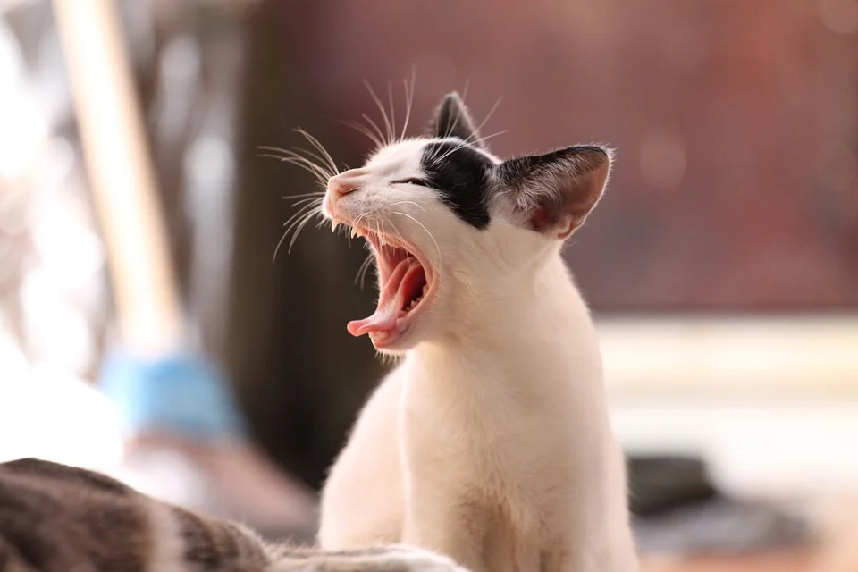
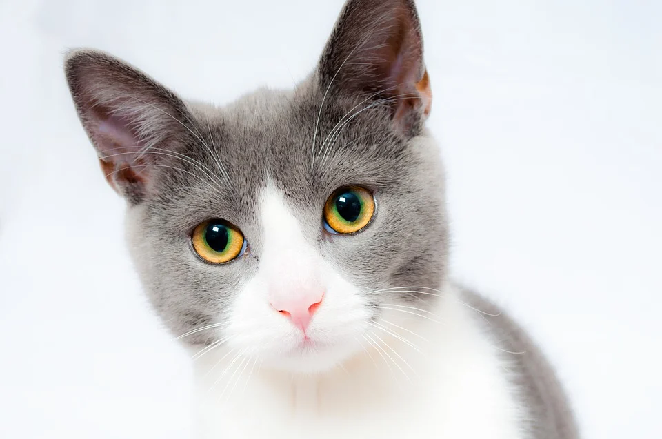

Kediler ve İnsanlar
1. EŞ BAĞIMLI İLİŞKİ
Bu ilişki türünde kediler genellikle kendisine çok fazla duygusal olarak yatırım yapan sahibine bağımlı hale geliyor. Sahibi kedisine çok önem veriyor, onu bir aile üyesi veya arkadaşı olarak görüyor.Aynı zamanda sahibi kediyle düzenli olarak oynuyor. Ancak eş bağımlı ilişkide kedi başkalarıyla ilişki kurmuyor. Örneğin eve farklı biri geldiğinde saklanıyor. Bu kedi, aynı zamanda sahibi ile yakın olduğunda kendinin ödüllendirileceğini biliyor. Örneğin sahibi yemek yerken onun başında bekliyor ve kendisine yiyeceğinden bir şeyler vermesini bekliyor.Bununla birlikte sahibine fiziksel yakınlığını korumak için önemli bir çaba sarf ediyor ve ayrılma sorunu yaşıyor. Sahibi uzaktaysa yemek yemeyi reddedebiliyor ve hayal kırıklıklarını kontrol etmede bazı sorunlar yaşıyor. Uzmanlar Bu ilişki türünün özellikle dışarıya çıkmayan ve tek kişilik bir evde yaşayan kediler arasında yaygın olduğunu söyledi.

2. GÜNDELİK İLİŞKİ
Bu kediler, evlerde yaşamaktan ziyade açık havada yaşamayı tercih ediyor. Sık sık kendi mahallelerindeki birkaç evi ziyaret ediyorlar ve bazen günlerce ortadan kayboluyorlar. Bununla birlikte, b u kediler kendileriyle ilgilenenler dostça davransalar da, onlarla yakın kalmaya çalışmıyorlar. Aslında, sahipleri ile aralarına biraz mesafe koymak için çaba göstermeleri de olası.

3. ARKADAŞLIK
Bu ilişki türünde de eş bağımlı ilişki de olduğu gibi, sahibi kediyle düzenli olarak duygusal ilişki kuruyor: kedi için endişeleniyor onu iyi bir arkadaş ya da ailenin bir parçası olarak görüyor. Aynı zamanda, kediyle oynamak için zaman yaratıyor. Kedi de buna karşılık olarak sahibine karşı çok sıcak ve arkadaş canlısı davranıyor, onun kucağına oturuyor, elini ve yüzünü yalıyor. Sahibini sadece aynı sosyal grubun bir parçası olarak değil, aynı zamanda onu güvenli bir üs olarak görüyor.
Fakat, sahibiyle arkadaş olmayı tercih eden kediler, eş bağımlı ilişkiden farklı olarak başkalarıyla iyi ilişki kuruyor. Eve gelen ziyaretçileri karşılıyor ve hatta bazı komşuları ziyaret ediyor. Dostça ve sıcak ilişkinin yanı sıra, kedi ve sahibi bağımsız olarak mutlu bir şekilde yaşamaya devam ediyor.
Araştırmacılara göre, bu kediler sahiplerine yakın olmayı seviyor, ancak sahibine fiziksel yakınlığı sürdürme ihtiyacı hissetmiyor. Ayrılma ise sorun yaratmıyor. Bu tip ilişki, birden fazla kedisi olan yoğun evlerde daha sık görülüyor ve kedilerin çoğu zaman dışarıya çıkmasına izin veriliyor.

4. AÇIK İLİŞKİ
Bu tür bir bağdaki kediler; yalnız, bağımsız bir hayvan olarak prototipik bir görünümünü yansıtıyor. Kediler diğer insanlarla iyi ilişkiler kuruyorlar, yani ziyaretçileri selamlamaları veya komşuları ziyaret etmeleri oldukça muhtemel. Ancak, sahiplerinin yakınlığına çok az ihtiyaç duyuyorlar. Sahibinin kucağına oturmuyorlar ya onların elini ya da yüzünü yalamıyorlar.

5. UZAKTAN İLİŞKİ
Bu tür bir ilişkide kediler önemseniyor, ancak tipik olarak yakın bir arkadaş veya ailenin bir parçası olarak kabul edilmiyorlar. Kedinin sahibine karşı davranışları oldukça arkadaşça olsa da, duygusal olarak çok yakın olmayabilirler. Bu kediler, muhtemelen özgüven eksikliğinden dolayı insanlardan (sahipler ve diğerleri) uzak durmayı tercih ediyorlar. Sahibinin elini ve yüzünü yalamıyorlar, endişeli ve üzüntülü olsalar bile sahiplerini aramıyorlar.